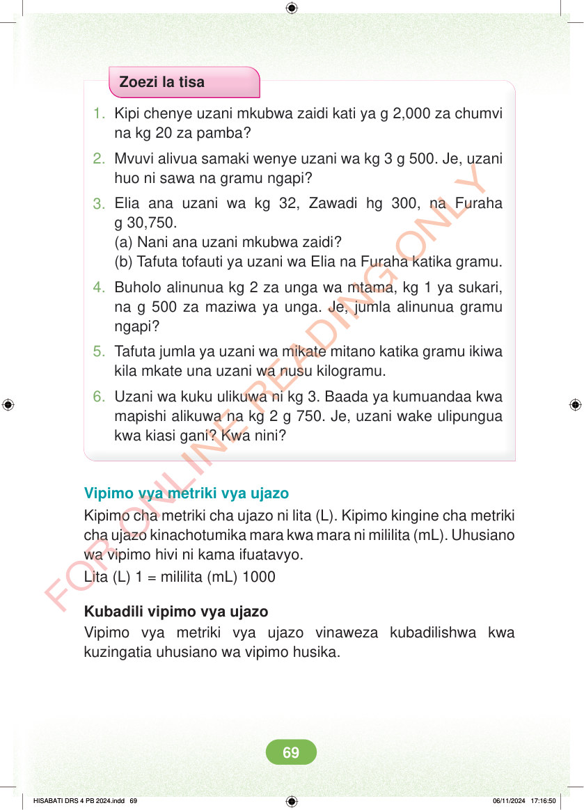

Zoezi la tisa 1. Kipi chenye uzani mkubwa zaidi kati ya g 2,000 za chumvi na kg 20 za pamba? 2. Mvuvi alivua samaki wenye uzani wa kg 3 g 500. Je, uzani huo ni sawa na gramu ngapi? 3. Elia ana uzani wa kg 32, Zawadi hg 300, na Furaha g 30,750. (a) Nani ana uzani mkubwa zaidi? (b) Tafuta tofauti ya uzani wa Elia na Furaha katika gramu. 4. Buholo alinunua kg 2 za unga wa mtama, kg 1 ya sukari, na g 500 za maziwa ya unga. Je, jumla alinunua gramu ngapi? 5. Tafuta jumla ya uzani wa mikate mitano katika gramu ikiwa kila mkate una uzani wa nusu kilogramu. 6. Uzani wa kuku ulikuwa ni kg 3. Baada ya kumuandaa kwa mapishi alikuwa na kg 2 g 750. Je, uzani wake ulipungua kwa kiasi gani? Kwa nini? Vipimo vya metriki vya ujazo Kipimo cha metriki cha ujazo ni lita (L). Kipimo kingine cha metriki cha ujazo kinachotumika mara kwa mara ni mililita (mL). Uhusiano wa vipimo hivi ni kama ifuatavyo. Lita (L) 1 = mililita (mL) 1000 Kubadili vipimo vya ujazo Vipimo vya metriki vya ujazo vinaweza kubadilishwa kwa kuzingatia uhusiano wa vipimo husika. HISABATI DRS 4 PB 2024.indd 69 HISABATI DRS 4 PB 2024.indd 69 06/11/2024 17:16:50 06/11/2024 17:16:50